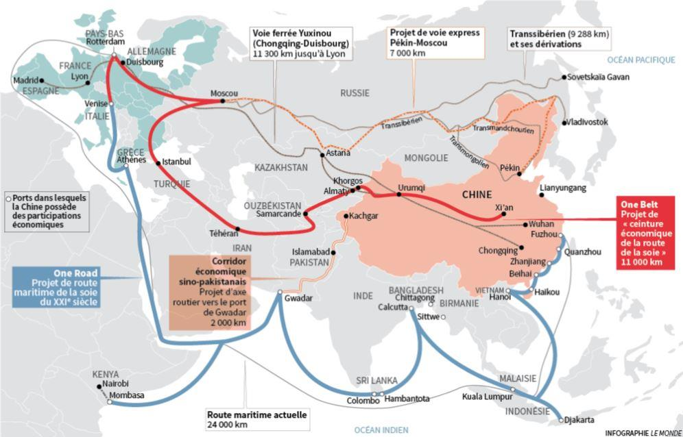

N’ayant acquise que très tardivement son indépendance de la France en 1977, la République de Djibouti est un pays ceinturé entre ces trois grands voisins que sont l’Érythrée, l’Éthiopie et la Somalie. Pour les quelques rares initiés cette petite parcelle de la corne de l’Afrique n’est rien moins qu’un immense territoire rocailleux que l’armée française utilise depuis des décennies comme terrain d’entrainement et lieu de villégiature pour les « touristes institutionnels français » de passages en quête d’exotisme.
L’intérêt déjà limité de Paris pour ce pays s’estompe depuis de nombreuses années et s’est signalé, d’un point de vue stratégique, par une lente mais réelle réduction drastique des effectifs militaires français1. En conséquence, la communauté des résidents français ne représente guère plus de 3500 permanents2.
La France ayant largement perdu de son influence et ne possédant semble-t-il plus la volonté ni les moyens de s’impliquer économiquement à Djibouti ; elle a laissé le champ libre aux deux grandes super puissances que sont les États Unis et la Chine.
La nature ayant horreur du vide, d’autres nations européennes ainsi que l’empire du soleil levant ont su tirer avantageusement profit de cette faiblesse pour investir et créer des liens de coopération plus intense avec Djibouti sous couvert de la lutte contre la piraterie aux côtés des troupes américaines.
LA « PAX AMERICANA »
La présence américaine dans ce coin reculé du continent africain prend sa source dans les attentats de New York de 2001 qui aboutiront à l’envoi de la Combined Task Force 150 en octobre 2002. Le but de cette présence militaire était l'apport d'aide humanitaire ainsi que l’exécution de patrouilles dans la Corne de l'Afrique afin de réduire les capacités des groupes terroristes dans la région.
Pour les États-Unis, Djibouti est stratégiquement et idéalement située à l'intersection de l'Afrique et du Moyen-Orient. Diverses zones à problèmes - telles que la Somalie, le Soudan du Sud ou le Yémen - se trouvent à proximité immédiate. En outre, Djibouti repose sur l'importance du détroit de la navigation internationale Bab al-Mandab, qui relie le golfe d'Aden à la mer Rouge et enfin au canal de Suez. En conséquence les américains se devaient d’exploiter les « opportunités » stratégiques qu’offraient Djibouti et profiter de la circonstance du départ d’un régiment français pour prendre possession de l’ancien camp militaire français Lemonnier afin de s’y installer durablement. Dès lors, Djibouti, devient une des plaques tournantes de la lutte contre le terrorisme et de la lutte contre la piraterie maritime dans cette partie du monde.
Aujourd’hui le « Camp » de la nouvelle Combined Joint Task Force-Horn of Africa accueille environ 4000 personnels civils et militaires américains surpassent de loin la présence militaire française à Djibouti. Lemonnier s’impose comme base indispensable pour les opérations de drones vers le Yémen ou la Somalie en devenant l’élément clé du dispositif américain dans la lutte contre le terrorisme international. À tel point que « l’armée américaine a (…) transformé ses installations djiboutiennes pour en faire la plateforme de drones la plus active au monde en dehors de l’Afghanistan 3».
Au fur et à mesure que le contexte international renforçait le rôle géostratégique de la petite République de Djibouti, la présence d’autres contingents étrangers, et l’augmentation de leurs effectifs militaires, n’a jamais été aussi important et ne cesse d’augmenter.
Ainsi des unités des forces armées allemandes, Italiennes, espagnols ont également pris leurs ses quartiers à Djibouti et font de la ville une des plus grosses garnisons internationales dans le monde.
Depuis 2009, Djibouti peut également s’appuyer sur la présence de la marine japonaise (ce qui est une première dans l’histoire contemporaine ce pays). Premier contingent militaire nippon envoyé outre-mer depuis la fin de la seconde Guerre Mondiale, les troupes japonaises partageaient dans un premier temps les installations du Camp Lemonnier avec leurs alliés américains jusqu'à l'établissement de leur propre base en 20114. À ce jour la base militaire de la Force d'autodéfense maritime du Japon compte environ 600 personnels.
Mais un autre acteur diplomatique, et non des moindres, à fait son apparition dans la corne de l’Afrique en brouillant les cartes et provoquant l’inquiétude des américains et de leurs alliés.
L’AVANT-POSTE DE LA PAX SINICA
« Dans la guerre, le nombre seul ne procure aucun avantage. N'avancez pas en vous reposant exclusivement sur la puissance militaire. » L’Art de la guerre de Sun Tzu.
Alors que les américains et leurs alliées privilégiaient le renforcement de leur potentiel militaire dans cette partie du monde, au détriment d’échanges commerciaux ; la République populaire de Chine œuvrait économiquement en investissant des sommes colossales pour le développement du port, dans les infrastructures, la voie ferrée et les routes à Djibouti.
Souhaitant économiser sur les coûts de transport et de logistique maritime ; Pékin prévoit de relancer ses exportations sur l’ensemble du continent africain. En effet, 90 % des importations et des exportations africaines passent par la mer5 et il était indispensable pour la Chine de trouver d’autres portes d’entrée dans la corne de l’Afrique, en Afrique de l’Ouest et du Nord.
L’objectif de ces implantations consiste en l’encerclement pacifique du continent par une coopération maritime avec une dizaine de ports, financés par la Chine, correspondant ainsi à cette fameuse nouvelle « Route de la soie » qui doit devenir l’accélérateur de la Chinafrique.
Pour l’empire du milieu c’est un projet stratégique qui permettra de servir la demande chinoise en matières premières africaines et la demande africaine en marchandises « made in China ». Parmi les pays aux avant-postes de ce projet se trouve tout naturellement Djibouti.
Navire de guerre chinois dans le port de Djibouti
Alors que les occidentaux avaient dans un premier temps boudé les initiatives chinoises en matière de développement et de finance internationale en Afrique tous sont aujourd’hui à la remorque de ce dessein à l’exception des Américains, l’un des seuls pays à ne pas participer à ce projet. Il ne se passe une réunion internationale à Pékin ou une visite d’État sans que la Route de la soie ne soit à l’agenda.
Le contrôle des mers par la Chine porte déjà ses fruits6 et les ports à capitaux chinois voient défiler les deux tiers des conteneurs qui circulent sur les mers de la planète ! Mais toutes ces nouvelles installations portuaires n’ont pas qu’une vocation commerciale mais aussi un usage militaire.

QUAND L’USAGE COMMERCIAL SERT LES INTÉRÊTS MILITAIRES DE LA CHINE
La nouvelle Route de la soie représentant l’artère vitale de son expansion commerciale et militaire en Afrique ; la Chine avait depuis longtemps découvert l’intérêt du territoire de Djibouti. Aussi, derrière ses programmes d’investissement économiques se cachaient incontestablement des ambitions militaires car la Chine entend se développer comme une nouvelle puissance maritime, à même de faire face aux États-Unis et à d’autres concurrents tels que le Japon. Signe distinctif de changement de paradigmes dans la politique d’expansion chinoise en Afrique.
Faisant référence à l’évacuation de 36 000 ressortissants chinois de Libye en 2011, il s’imposait à la seconde puissance militaire mondiale d’assurer la protection de ses bateaux et de ses ressortissants de plus en plus nombreux à s’installer en Afrique. Cité par le Financial Times, Un officiel chinois souligne qu’en cas de nouvelle crise militaire en Afrique ou au Moyen-Orient, « nous pourrions évacuer directement nos ressortissants en utilisant nos propres navires depuis le continent africain vers notre port… du Pirée ».
Considéré comme un départ prudent du rejet jusqu'ici strict de toute politique d'intervention de Pékin, la construction et l’inauguration historique de la première base militaire chinoise à Djibouti en 2018 n’est que le début d’une expansion civilo-militaire sur le continent africain.
Dérogeant ainsi à son principe de la non-intervention ce changement de cap avait été rendu clair par l'exemple du Sud Soudan7 où en 2014 Pékin dépêcha pour la première fois des soldats armés à l'étranger dans le cadre de sa mission à l'ONU. Cette nouvelle stratégie est définie dans un livre blanc de 2015 qui explique sans détour que la marine chinoise n’a plus seulement pour objectif de défendre les frontières terrestres de l’empire du Milieu, mais également de protéger ses intérêts à l’étranger et ses voies de communication maritimes.
Avec presque 10 000 soldats, qui seront autorisés à stationner dans un proche avenir à Djibouti selon le contrat de bail, Pékin laissera plus les problèmes de sécurité en Afrique aux seuls États occidentaux et pour cela, une forte présence militaire dans la corne de l’Afrique leur est actuellement indispensable.
LA CRISE YÉMÉNITE
Dans ce nouveau contexte géopolitique régional et désireuse à son tour de sécuriser la voie navigable pour assurer la sécurité des routes maritimes utilisées pour ses exportations de pétrole ; l'Arabie saoudite a décidé de renforcer sa coopération militaire avec Djibouti.
Les relations historiques et la coopération qu’entretiennent les deux pays sont anciennes et personne n’a été surpris que Djibouti rompe ses relations diplomatiques avec l'Iran à la suite des attaques contre l'ambassade saoudienne à Téhéran et le consulat général dans la ville de Mashhad.
Une visite antérieure du président Ismaël Omar Guelleh en Arabie saoudite et sa rencontre avec le roi Salman Bin Abdul Aziz Al Saud avaient marqué un changement positif profond dans les relations entre les deux pays.
Djibouti étant devenu membre de l'alliance arabe qui lutte au Yémen contre le groupe armé Houthi soutenu par l'Iran il existe un projet consistant à accueillir une base saoudienne sur le territoire djiboutien. Ainsi il a été permis à des officiers et des officiels saoudiens d’explorer plusieurs zones côtières de Djibouti pour identifier le meilleur endroit susceptible d’accueillir le contingent saoudien.
Avec l’arrivée des Saoudiens, le président de la République de Djibouti Ismaël Omar Guelleh à une fois de plus consolider la vocation de Djibouti comme la plateforme de lutte contre le terrorisme dans la région.
UN PRÉSIDENT VISIONNAIRE
Multipliant les contacts et les visites officielles auprès de ses proches voisins, en Europe comme en Amérique le président de la République de Djibouti, son excellence Ismaïl Omar Guelleh, est devenu au fils des ans un acteur et un interlocuteur incontournable et fiable pour cette région.
En consentant à autoriser toutes ces armées étrangères de s’établir sur son territoire, le président de la République de Djibouti a permis à son pays de profiter d’une manne financière non négligeable pour les finances publiques qui contribue à la bonne santé économique du pays. Mais l’impact social est également loin d’être négligeable, notamment en matière de création d’emplois dans les secteurs de la construction et des transports et du tertiaire sans compter l’apport en termes de consommation locale.
Il a en outre amené Djibouti à occuper une place de premier ordre au niveau régional et international qui assure à son pays le statut de puissance régionale. Il assoit ainsi la légitimité de Djibouti sur la scène internationale, sur un même plan que son ancienne métropole coloniale.
Le poids géostratégique que Djibouti tire de cette présence militaire massive garantit la sécurité de son pays et de ses concitoyens que beaucoup de pays de la région lui envie. En outre, elle rassure les investisseurs et assure la sécurité du pays et du golfe d’Aden et permet aujourd’hui à Djibouti de tenir son rang dans la région en assurant la formation de ses troupes qui servent dans le cadre de la Mission de l’Union Africaine en Somalie (AMISOM). Les troupes djiboutiennes y jouent un rôle important dans la sécurisation de la région de Hiran, la médiation dans des conflits claniques et le renforcement des capacités de l’Armée Nationale Somalienne.
Grâce à la clairvoyance du président Ismaïl Omar Guelleh, qui a subtilement su asseoir la légitimité internationale de la République de Djibouti et pu rejoindre l’Union africaine, Djibouti a eu l’opportunité de devenir un acteur plus influent dans la région et de rejoindre le rang des nations contribuant directement à la paix et à la stabilité en Afrique.
Le spectaculaire développement économique que connait aujourd’hui Djibouti, et qui est à mettre à l’actif du Président Guelleh, permettra sans nul doute à ce pays de connaître une heureuse croissance dans un proche avenir.
A.W.
Notes
1 Départ du régiment de la légion étrangère, fermeture de l’hôpital militaire, missions de courtes durées remplaçant les séjours de deux ans.
2 Chiffres gonflés par l’inscription des familles de militaire au registre des français de l’étranger au sein du consulat.
3 Selon le Washington Post.
4 Martin, Alex (2 July 2011). "First overseas military base since WWII to open in Djibouti". The Japan Times. Retrieved 3 December 2014.
5 Durban en Afrique du Sud et Port-Saïd en Égypte étant les deux plus importants ports de conteneurs du continent africain.
6 Dorénavant les cinq plus importants transporteurs maritimes chinois transportent déjà 18 % des conteneurs qui sillonnent la planète et les deux tiers des cinquante plus gros ports de la planète sont financés par des capitaux e l’empire du milieu.
7 Au Soudan du Sud, le déploiement des 700 casques bleus chinois pourrait avoir été lié d'avance à des intérêts économiques. On estime que jusqu'à 80 % des exportations de pétrole du Soudan du Sud iront à la Chine.
Partager cette page